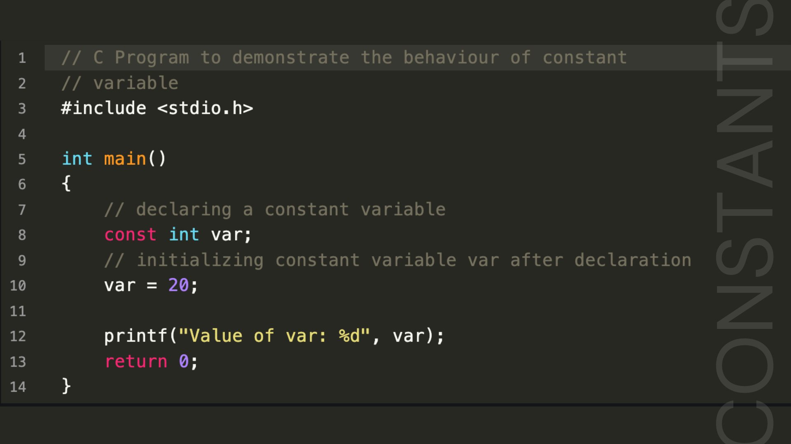

(3).gif)
What are Constants in C Language?
- In C, constants are fixed values that cannot be altered during the execution of the program.
- They are useful when you need to use a value multiple times in your program but don't want it to change.
- Constants can be defined using the #define directive or with the const keyword.
- There are several types of constants in C: integer constants, floating-point constants, character constants, and string constants.
- Example of defining a constant: #define PI 3.14 sets PI as a constant with the value 3.14.
CONSTANTS
- int_const: An integer constant with a value of 25.
- char_const: A character constant with a value of 'A'.
- float_const: A floating-point constant with a value of 15.66.
- Integer Constant: Represents whole numbers, such as 10, -5.
- Character Constant: Represents a single character, enclosed in single quotes, such as 'A', 'z'.
- Floating-Point Constant: Represents numbers with a fractional part, such as 3.14, -0.567.
- Double-Precision Floating-Point Constant: Represents numbers with a higher precision compared to floating-point constants.
- Array Constant: Represents a fixed sequence of values of the same type, such as {1, 2, 3} for integers.
- Structure Constant: Represents a group of related values under one name, defined using the struct keyword.
- Initialization with Declaration:
We can only initialize the constant variable in C at the time of its declaration. Otherwise, it will store the garbage value.
- Immutability:
The constant variables in C are immutable after their definition, i.e., they can be initialized only once in the whole program. After that, we cannot modify the value stored inside that variable.
- Initialization: A constant variable must be initialized during its declaration. For example,
const int var = 20;. If not initialized, it will result in an error if you try to assign a value later. - Immutability: Once a variable is declared with the const keyword, its value cannot be changed. Any attempt to modify it, such as
var = 25;, will result in a compilation error. ARITHMETIC OPERATORS
RELATIONAL OPERATORS
LOGICAL OPERATORS
ASSIGNMENT OPERATORS
In C, a constant is a fixed value that does not change during the execution of a program. Constants are used to represent values that remain the same throughout the code, providing clarity and reducing the chance of errors.
Output:
Click
Sample Code Explained
In the example below, constants are defined using the const keyword. These constants have fixed values that cannot be changed during program execution:
The printf statements demonstrate how these constants are used to print their values.
Types of Constants in C
The type of a constant is the same as the data type of a variable. Following is the list of the types of constants:
Properties of Constants in C
The important properties of constant variables in C defined using the const keyword are as follows:
Immutability
Output:
Click
Sample Code Explained:
| Constant | Literals |
|---|---|
| Constants are variables that cannot be modified once declared. | Literals are the fixed values that define themselves. |
Constants are defined by using the const keyword in C. They store literal values in themselves. |
They themselves are the values that are assigned to the variables or constants. |
| We can determine the address of constants. | We cannot determine the address of a literal except string literal. |
| They are lvalues. | They are rvalues. |
Example: const int c = 20; |
Example: 24, 15.5, 'a', "Geeks", etc. |
C OPERATORS
Arithmetic operators are used to perform basic mathematical operations such as addition, subtraction, multiplication, division, and modulus.
Sample Code:
Output:
Click
Relational operators are used to compare two values. They return either true (1) or false (0) depending on the condition.
Sample Code:

Output:
Click
Logical operators are used to combine multiple conditions or expressions. They include && (AND), || (OR), and ! (NOT).
Sample Code:
| S. No. | Symbol | Operator | Description | Syntax |
|---|---|---|---|---|
| 1 | && | Logical AND | Returns true if both the operands are true. | a && b |
| 2 | || | Logical OR | Returns true if both or any of the operands are true. | a || b |
| 3 | ! | Logical NOT | Returns true if the operand is false. | !a |
Output:
Click

Assignment operators are used to assign values to variables. Common operators include =, +=, -=, *=, /=, and %=.
Sample Code:

Output:
Click